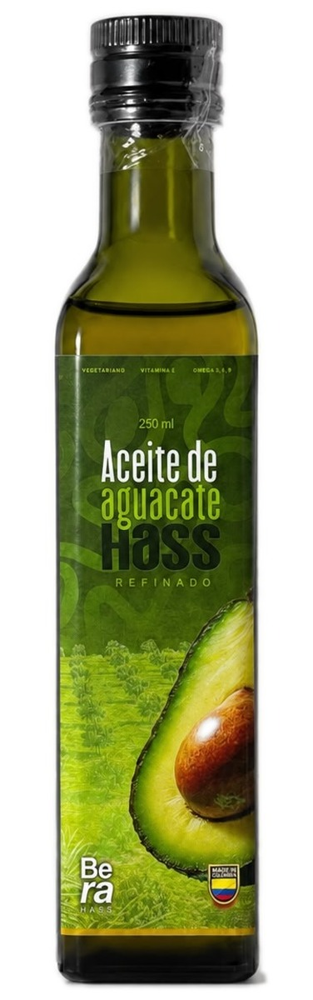

01
Cocina

Aceite Refinado
El aliado perfecto en tu cocina · 250 ml
Sabor neutro y punto de humo de 280 °C. Para freír, saltear y hornear sin que el aceite se degrade ni tape el sabor del plato.
280 °C punto de humo745 kcal/100mlGrasa mono. 64 g0 trans
Ver producto